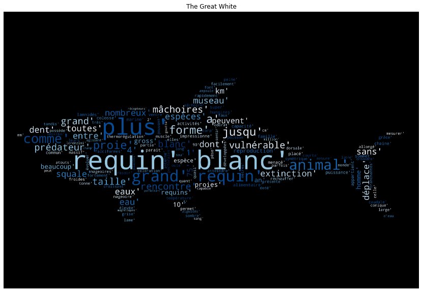

Le requin se caractérise par sa silhouette fuselée, particulièrement hydrodynamique,
et ses nageoires pectorales et dorsales,ainsi que sa nageoire caudale hétérocerque (de forme asymétrique).
Il est pourvu d'un squelette entièrement cartilagineux et de cinq à sept fentes branchiales latérales selon les espèces.
Les requins pélagiques vivent au large des mers et des océans. C'est parmi eux que l'on trouve les plus grandes espèces de poissons.
Ils habitent les eaux tempérées et tropicales, et nombre d'entre eux sont des espèces migratrices.
